Projet ROS 2 : Navigation Autonome avec Pathfinding (TekBot)
1. Présentation Générale
Ce projet a pour objectif de développer un système de navigation autonome pour un robot mobile simulé (TekBot) dans l'environnement Gazebo, en utilisant ROS 2 (Humble). Le TekBot est un robot équipé de capteurs permettant de s’orienter dans un environnement simulé, tel qu’un labyrinthe. À travers ce projet, nous avons voulu simuler une navigation complète comprenant la planification de trajectoire (pathfinding), le suivi du chemin, l’évitement d’obstacles, et la visualisation en temps réel dans RViz2.
Ce projet permet ainsi de mettre en œuvre plusieurs compétences clés en robotique mobile, notamment la compréhension et la manipulation de ROS 2, l’utilisation de capteurs comme le LIDAR pour détecter l’environnement, l’intégration de simulations complexes sous Gazebo, le traitement de l’odométrie pour le suivi de la position du robot, et la génération de cartes pour la navigation.
{kind=link}
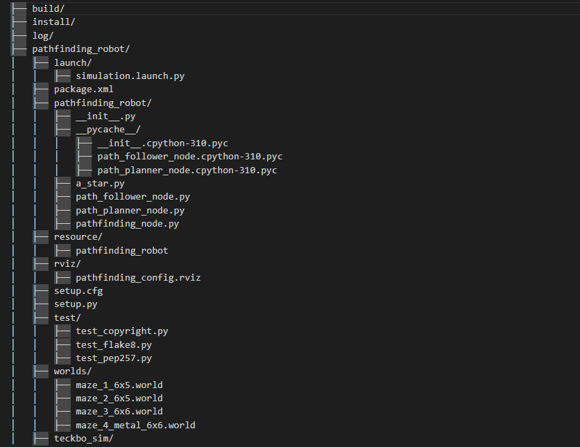
🔺🔺🔺
Cliquer sur l'image pour agrandir
2. Configuration de l’Environnement
Pour mettre en place le projet de navigation autonome TekBot dans un environnement ROS 2, il est essentiel de disposer d’une configuration logicielle rigoureuse. Ce projet repose sur ROS 2 Humble, l’une des distributions les plus stables et robustes de ROS 2, fonctionnant de préférence sous Ubuntu 22.04. En plus de ROS 2, le simulateur Gazebo Classic est utilisé pour générer un environnement réaliste en 3D dans lequel évolue le robot. L’outil RViz2 est également indispensable pour observer en temps réelle les movement et iterations en jeu.
-Le projet s’articule autour de plusieurs packages ROS 2.
Le package principal, nommé pathfinding_robot, contient tous les scripts relatifs à l’intelligence du robot, notamment l’algorithme A*, la logique de suivi de chemin et l’évitement d’obstacles. Il repose sur une base logicielle complémentaire appelée tekbot_sim, qui inclut la définition du robot (URDF), les contrôleurs nécessaires à sa propulsion virtuelle, et plusieurs mondes simulés sous forme de labyrinthes, ce ...
Pour installer le projet, il convient de commencer par cloner les packages depuis leurs dépôts respectifs. Le dépôt tekbot_sim doit être cloné dans le dossier ~/ros2_ws/src :
git clone https://github.com/charif-tekbot/tekbot_sim.gitEnsuite, le dépôt personnel contenant le package pathfinding_robot doit être ajouté également dans le même dossier src. Cela garantit que tous les composants sont compilés ensemble.
Une fois tous les fichiers présents, il faut procéder à la compilation :
cd ~/ros2_ws
colcon build
source install/setup.bashCette commande compile les packages et prépare l’environnement ROS 2 à les exécuter. Il est important d’utiliser la bonne version de Python (3.10 avec ROS2 Humble) et de s’assurer que tous les packages requis (comme nav_msgs, geometry_msgs, rclpy) sont bien installés. Une fois cela fait, le système est prêt à être lancé avec les commandes décrites dans la suite du document.
3. Structure du package pathfinding_robot
Le package pathfinding_robot constitue le cœur logique du système de navigation autonome. Il est structuré selon les standards ROS 2 afin d’assurer modularité, clarté et extensibilité. Chaque composant du comportement du robot est séparé dans un répertoire dédié. Le répertoire launch contient les fichiers Python de lancement, principalement simulation.launch.py qui permet de démarrer simultanément le monde Gazebo, le modèle du robot TekBot, le nœud ...
Le répertoire path_planner contient le script path_planner_node.py. C’est ici que l’algorithme A* est mis en œuvre pour générer le chemin optimal depuis une position de départ jusqu’à une cible prédéfinie. Ce nœud publie sur le topic /planned_path une séquence de points à atteindre.
De son côté, le répertoire path_follower héberge le nœud path_follower_node.py, responsable du suivi du chemin généré. Il lit les messages du topic /planned_path et compare la position actuelle du robot (via /odom) avec le prochain waypoint à atteindre. En ajustant sa vitesse linéaire et angulaire, le robot progresse efficacement dans son environnement.
Enfin, le dossier rviz comprend le fichier de configuration pathfinding_config.rviz. Celui-ci permet d’afficher en un clic la configuration standard dans RViz2 avec les éléments essentiels : modèle du robot, capteurs, chemin planifié, TF et odométrie. Cette architecture permet une séparation claire des préoccupations entre planification, exécution, et visualisation. L’ensemble est compilé grâce à un package.xml et un setup.py standard.
simulation.launch.py {kind=link}
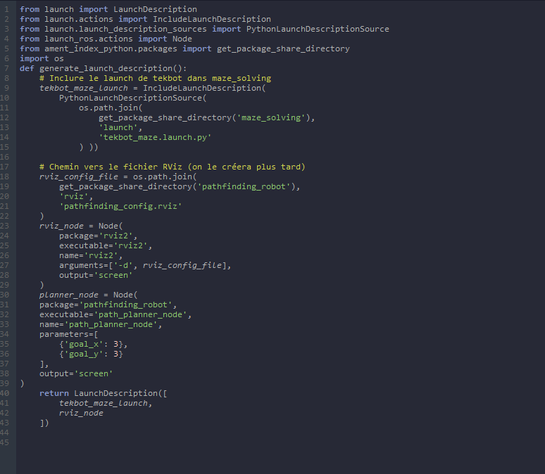
Contenu du fichier
package.xml 
>Contenu du fichier
setup.py {kind=link}
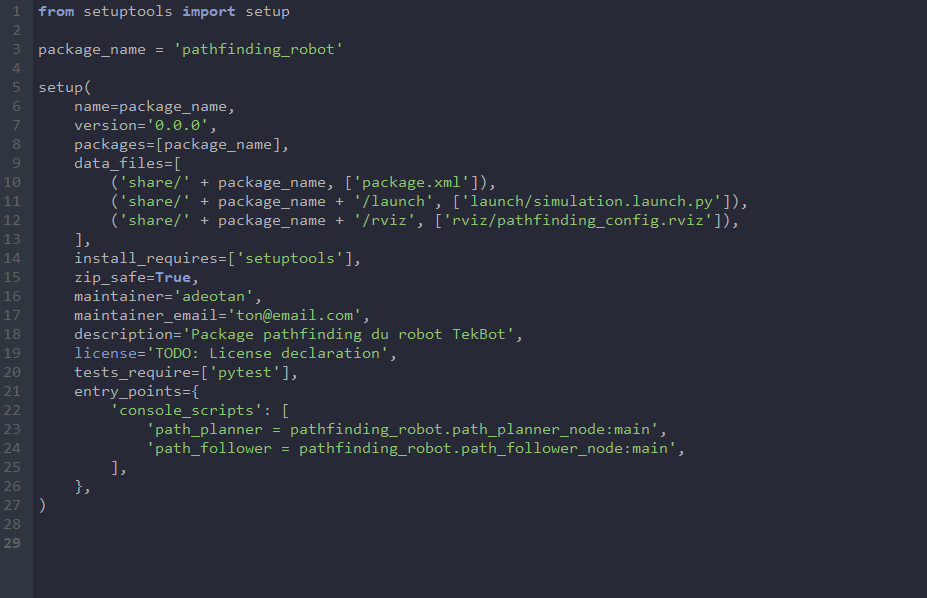
4. Algorithme de Pathfinding (A*)
L’algorithme A* implémenté dans le nœud path_planner_node.py est un classique en intelligence artificielle pour la recherche de chemin. Il repose sur une représentation de l’environnement sous forme de grille, où chaque cellule est soit traversable, soit occupée. À partir d’une position de départ et d’une cible, l’algorithme explore les chemins possibles en évaluant un coût f(n) = g(n) + h(n), où g est le coût réel depuis le départ et h est une estimation heuristique de la dis...
Le fonctionnement général consiste à construire une file de priorité, ou "open list", qui sélectionne à chaque itération le nœud le plus prometteur. Les cellules explorées sont stockées dans une "closed list" pour éviter les boucles. Lorsqu’un chemin est trouvé, il est reconstruit en suivant les parents de chaque nœud jusqu’au point d’origine.
Le nœud A* dans ce projet est déclenché automatiquement au lancement de la simulation. Il publie le chemin obtenu sous forme d’un message nav_msgs/Path contenant une liste de geometry_msgs/PoseStamped. Cette liste est ensuite lue par le suiveur de chemin. La robustesse de l’algorithme A* permet d’obtenir un chemin optimal, pour peu que l’environnement reste statique et que la grille soit correctement générée. En cas d’extension future, ce module pourrait être amé...
path_planner_node.py {kind=link}
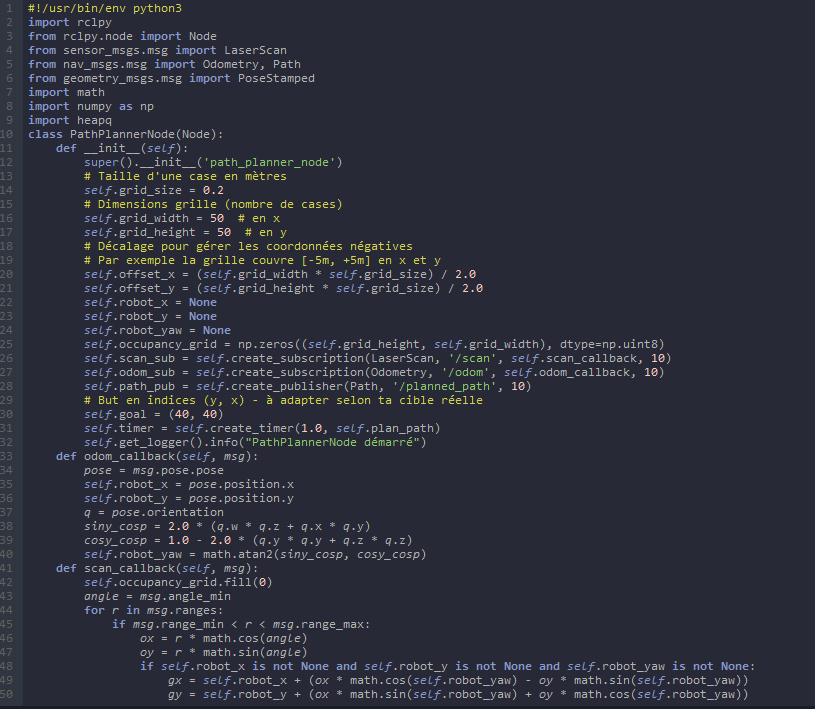
{kind=link}
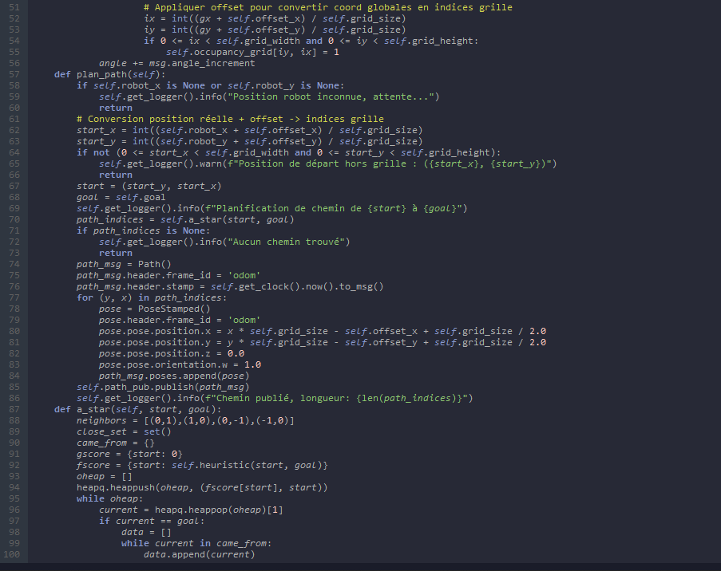
{kind=link}
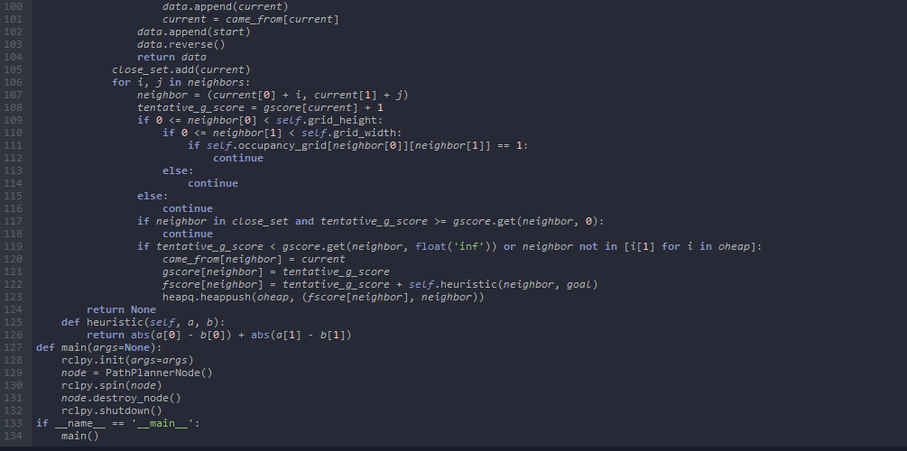
5. Suivi de Chemin (Path Following)
Le suivi de chemin est réalisé dans le nœud path_follower_node.py. Celui-ci reçoit en entrée la séquence de positions générée par A* via le topic /planned_path, ainsi que la position actuelle du robot, récupérée par /odom. L’objectif du nœud est de faire progresser le robot vers chacun des waypoints, en ajustant ses vitesses linéaire et angulaire.
La logique de suivi repose sur une stratégie simple mais efficace : si l’angle entre la direction actuelle du robot et la cible est trop important, le robot pivote sur lui-même pour se réaligner. Si au contraire l’angle est faible, il avance tout droit. Une tolérance de 20 cm est utilisée pour considérer qu’un waypoint est atteint. Une fois ce point franchi, le robot s'arrête.
path_follower_node.py {kind=link}
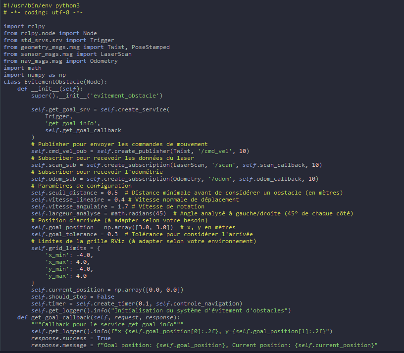
{kind=link}
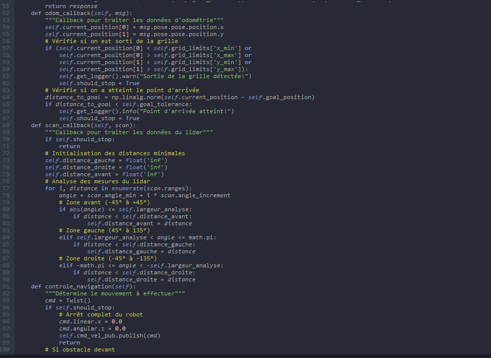
{kind=link}
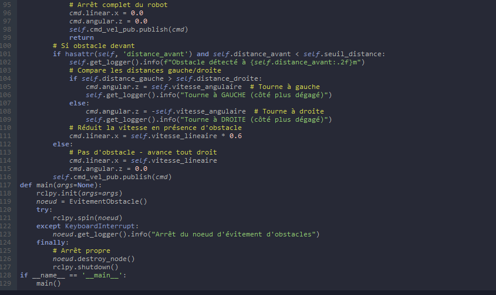
6. Évitement d'Obstacles
L’évitement d’obstacles est essentiel pour assurer la robustesse du robot dans un environnement dynamique ou incertain. Dans le cas présent, le robot TekBot utilise un capteur LIDAR simulé, dont les données sont publiées sur le topic /scan. Ce capteur permet de détecter les objets se trouvant dans un champ de vision de 180° environ, avec une précision suffisante pour éviter les collisions à courte portée.
Le principe est simple : à chaque cycle, le nœud de suivi analyse les valeurs du scan dans une zone frontale (typiquement ±15° autour de l’axe avant). Si une distance inférieure à 0.4 m est détectée dans cette plage, le robot s’arrête immédiatement. Cette mesure de précaution garantit que le robot ne percute pas un mur ou un obstacle imprévu. Il s’agit ici d’un évitement réactif basé sur une règle simple.
Ce système pourrait être amélioré en mettant en place une replanification dynamique ou un algorithme de contournement automatique. Néanmoins, dans le cadre d’un labyrinthe statique, ce mécanisme est largement suffisant. Le traitement des données LIDAR est effectué à l’aide des messages sensor_msgs/LaserScan qui fournissent les distances pour chaque angle. Il est possible d’étendre ce système pour créer une carte locale autour du robot, utile pour le SLAM ou la navigation autonome...
🛊 7. Simulation & Visualisation
La simulation est réalisée dans Gazebo Classic, un environnement de simulation 3D largement utilisé dans l’écosystème ROS. Le robot TekBot est inséré dans un monde appelé maze_4_metal_6x6.world, conçu pour représenter un labyrinthe comportant des couloirs étroits et des intersections multiples. Le robot démarre à une position initiale définie dans le fichier simulation.launch.py et commence sa navigation en tentant d’atteindre une cible prédéterminée.
La visualisation en temps réel s’effectue via RViz2. Ce puissant outil ROS permet d’afficher des topics sous forme graphique. Dans ce projet, on y visualise les messages de /scan (laser), /odom (odométrie), /planned_path (chemin généré), ainsi que le modèle URDF du robot et ses TF. Il est important de bien configurer le Fixed Frame en odom pour garantir une visualisation cohérente.
Cette combinaison Gazebo-RViz2 offre une plateforme complète de développement, test et débogage. Elle permet de tester différentes topologies de labyrinthe, d’évaluer la performance du robot, et de visualiser ses décisions en temps réel. L’utilisateur peut ainsi voir le robot pivoter, éviter les obstacles, et suivre un chemin calculé à travers un environnement complexe, sans avoir besoin d’un robot physique réel.
Visualisation dans Gazebo
{kind=link}
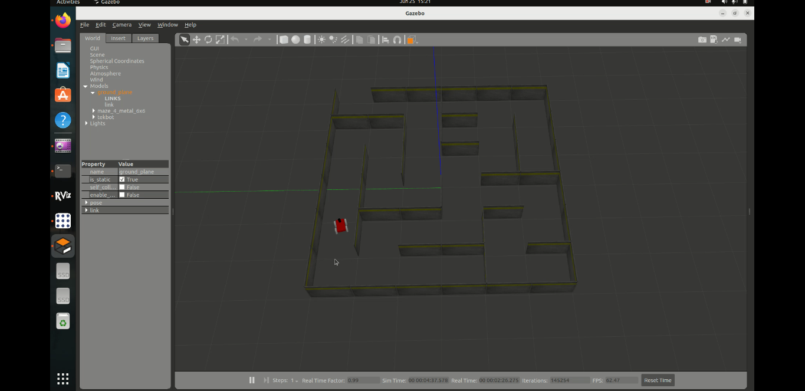
8. Lancement
Le système peut être démarré en lançant un fichier unique : simulation.launch.py. Ce fichier ROS 2 regroupe tous les composants nécessaires : insertion du robot dans Gazebo, démarrage des nœuds de planification, suivi, et évitement. Il constitue donc le point d’entrée principal du projet.
ros2 launch pathfinding_robot simulation.launch.pyPour des tests plus ciblés, chaque nœud peut être lancé individuellement :
ros2 run pathfinding_robot path_planner
ros2 run pathfinding_robot path_followerAssurez-vous que Gazebo est bien lancé et que le robot est chargé avant d’activer ces composants manuellement. Ces commandes permettent également de diagnostiquer plus facilement chaque étape du processus, en affichant séparément les logs, les erreurs, ou les messages ROS publiés. Il est aussi possible de rejouer des scénarios en modifiant les positions initiales dans le fichier de lancement. La modularité du système est pensée pour faciliter les tests, l’évaluation, et l’évolution future...
9. Difficultés Rencontrées & Solutions Apportées
Le développement de ce projet a été jalonné de plusieurs défis techniques. L’un des premiers problèmes rencontrés concernait l’affichage dans RViz2. L’écran restait noir, ne montrant que le quadrillage. La solution a été de configurer correctement le champ Fixed Frame en odom, assurant ainsi la synchronisation avec les données du robot.
Une autre difficulté fréquente a été l’absence de chemin retourné par l’algorithme A*. Après diagnostic, cela provenait d’un mauvais positionnement initial du robot, le plaçant en dehors de la grille virtuelle de planification. La correction a été apportée en ajustant les coordonnées x_init et y_init dans le fichier de lancement.
10. Visualisation recommandée dans RViz2
Pour une visualisation optimale du système, RViz2 doit être configuré avec plusieurs éléments essentiels. Tout d’abord, le champ Fixed Frame doit être défini sur odom afin d’assurer une cohérence temporelle entre les différentes sources de données. Ensuite, l’affichage du RobotModel permet de visualiser la structure du TekBot et ses liaisons mécaniques.
Le plugin LaserScan affiche en temps réel les mesures du LIDAR. Il est possible d’y ajuster les couleurs et seuils pour une meilleure lecture. Le chemin planifié est rendu via le type Path, qui montre les waypoints à suivre. Les transformations entre les frames du robot sont visualisées à l’aide du plugin TF, utile pour comprendre les décalages spatiaux.
Enfin, l’affichage de l’odométrie (Odometry) permet de suivre la position et orientation calculée du robot dans l’espace. L’ensemble forme une interface puissante pour le suivi de comportement en temps réel. Ces éléments peuvent être sauvegardés dans un fichier RViz pour faciliter les futures sessions de travail.
{kind=link}
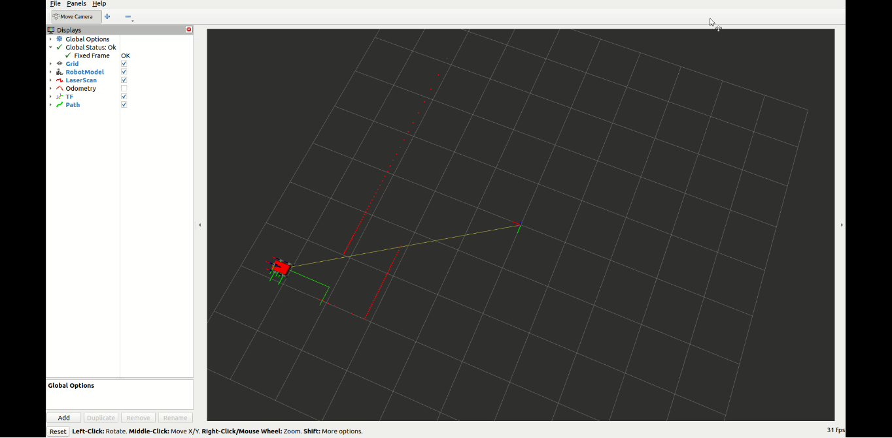
11. Conclusion & Améliorations Possibles
Ce projet de navigation autonome avec ROS 2 a permis de mettre en œuvre l’ensemble des briques fonctionnelles nécessaires au déplacement intelligent d’un robot mobile dans un environnement structuré. De la modélisation du robot, à la simulation dans Gazebo, en passant par la planification de trajet et le suivi de chemin avec évitement, chaque étape a apporté son lot d’apprentissages et d’intégration logicielle.
Le choix d’un algorithme A* garantit un bon compromis entre performance et simplicité, tout en restant facilement extensible. La séparation des modules ROS 2 permet une maintenance aisée et un développement incrémental. En termes d’amélioration, le système pourrait bénéficier d’une replanification dynamique, d’une intégration avec nav2, ou de l’ajout du SLAM avec slam_toolbox.
Ce projet constitue une excellente base pour la recherche en navigation autonome, ainsi qu’un support pédagogique complet pour l’apprentissage de ROS 2 dans un contexte réel et motivant.